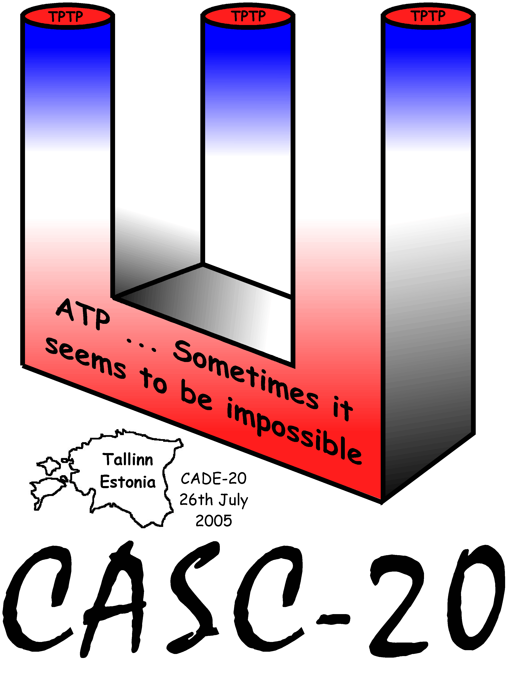

CASC-20
The CADE-20 ATP System Competition

History
Aims and Motivations
Divisions
CASC-20
Entrants
Results
Winner presentations
UEQ: Waldmeister 704 - Thomas Hillenbrand
EPR: DCTP 10.21p - Gernot Stenz ... did not attend
SAT: Paradox 1.3 - Niklas Sorensson ... went home yesterday
MIX, FOF: Vampire 8.0 - Andrei Voronkov
Conclusion
Thanks